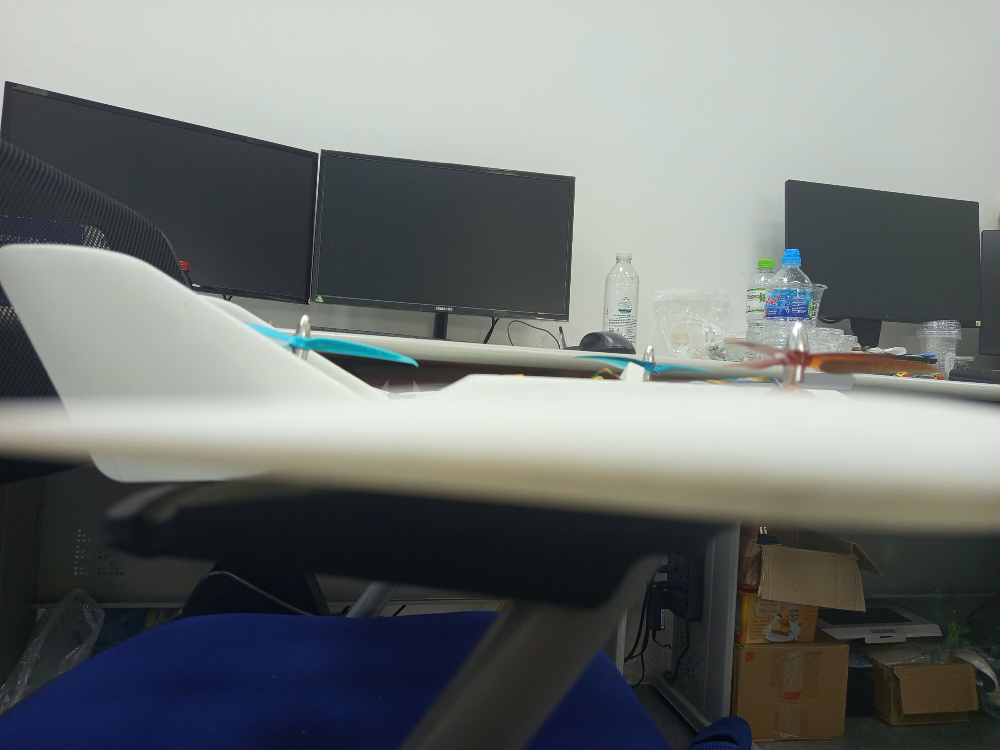
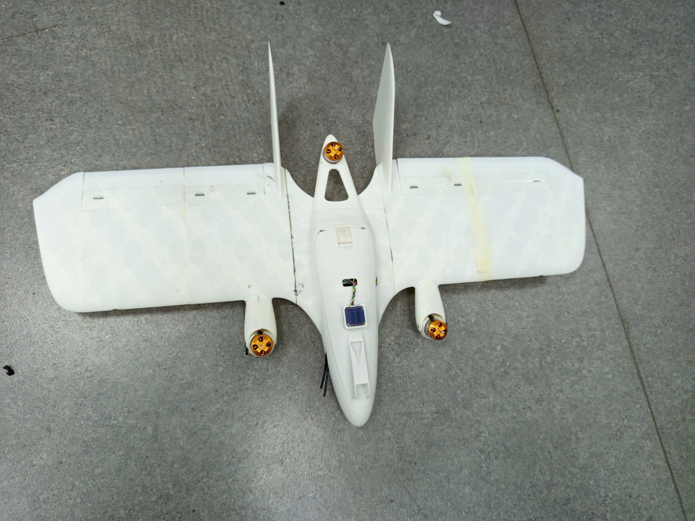
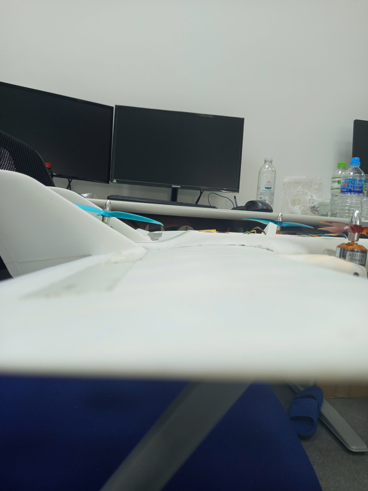
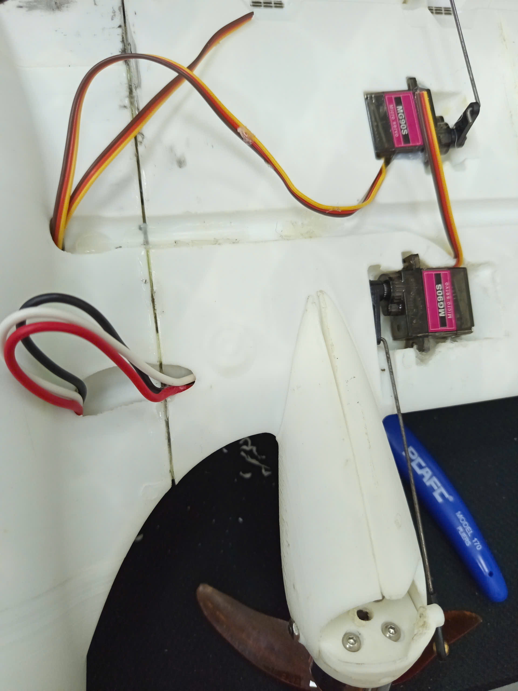
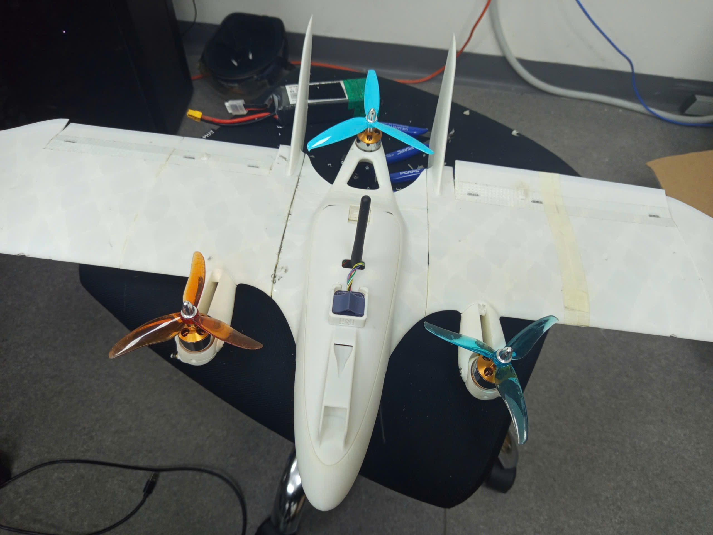
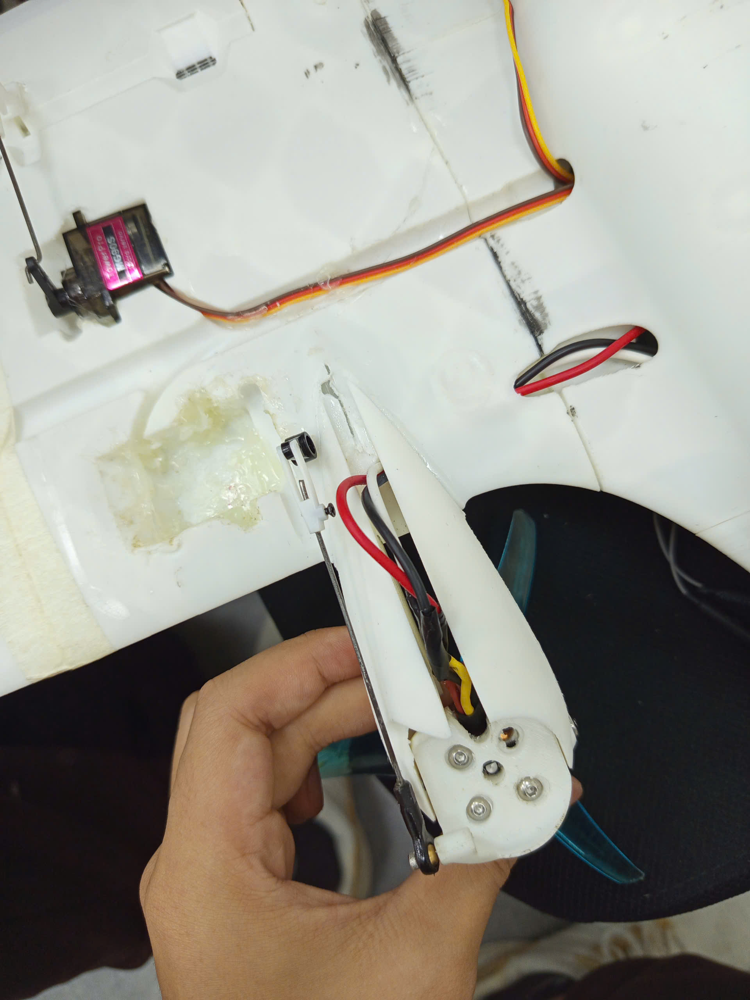
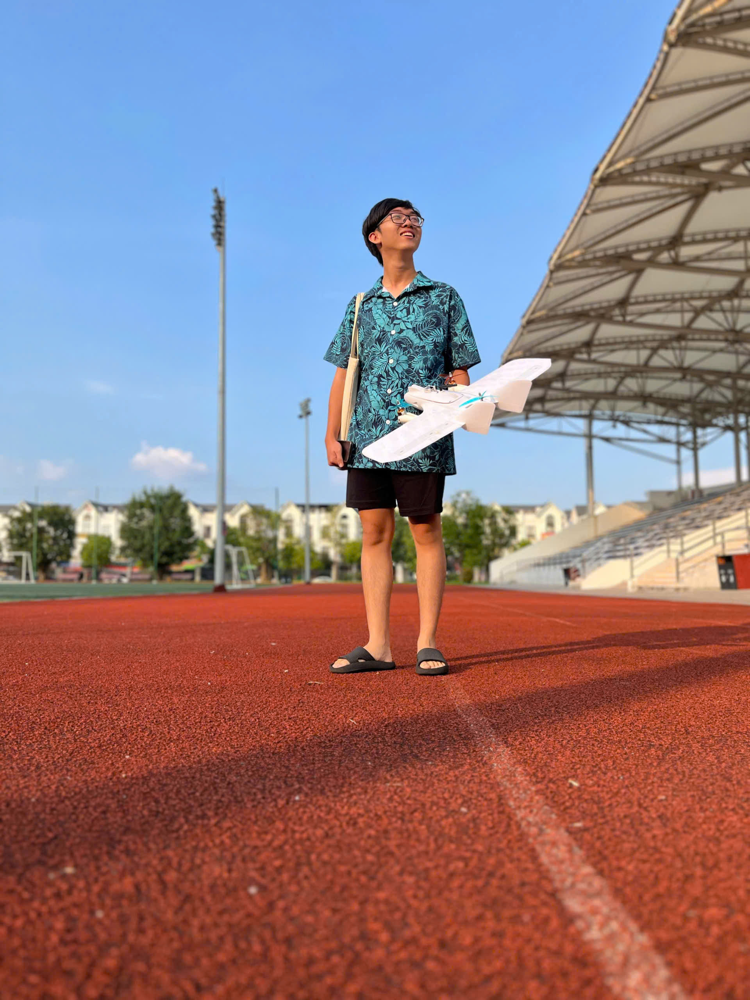
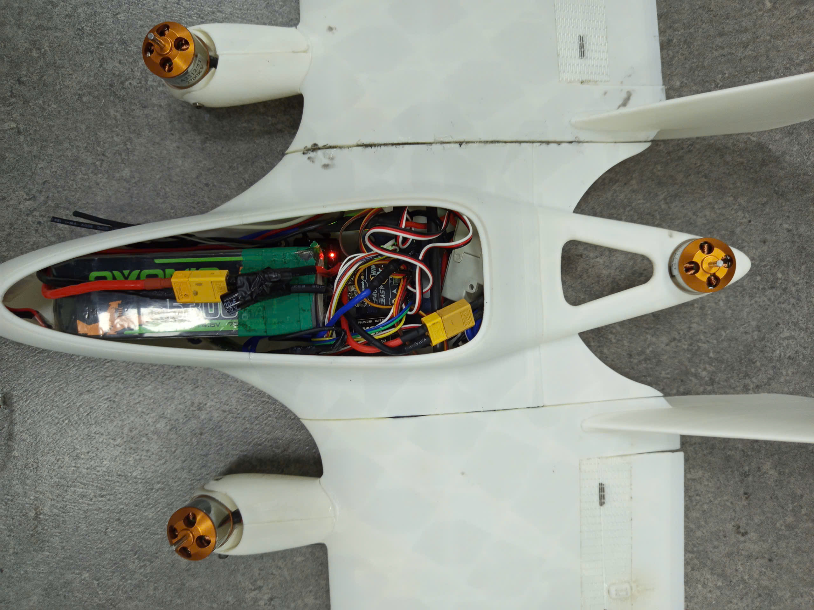
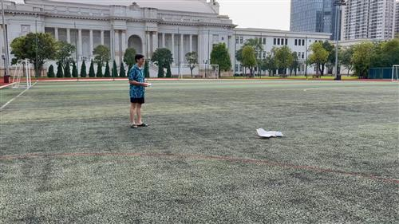

← Back to projects


MiniHawk VTOL Tilt-Rotor Tricopter
A hands-on build and flight-testing project based on Stephen Carlson’s open-source MiniHawk VTOL design. The aircraft combines vertical takeoff and landing with fixed-wing forward flight using two tilting front motors and one rear lift motor.
Project Overview
This project focused on learning through fabrication, assembly, configuration, and flight testing of a compact 3D-printed VTOL aircraft. The original MiniHawk design is a tricopter and fixed-wing hybrid intended as an accessible platform for RC, FPV, and UAV experimentation.
- Three-motor VTOL configuration with two tilting front nacelles
- Fixed-wing forward-flight mode with elevon control
- 3D-printed airframe fabrication and mechanical assembly
- Servo alignment and tilt-mechanism setup
- Flight-controller configuration, ground testing, and iterative troubleshooting
Design and Fabrication








